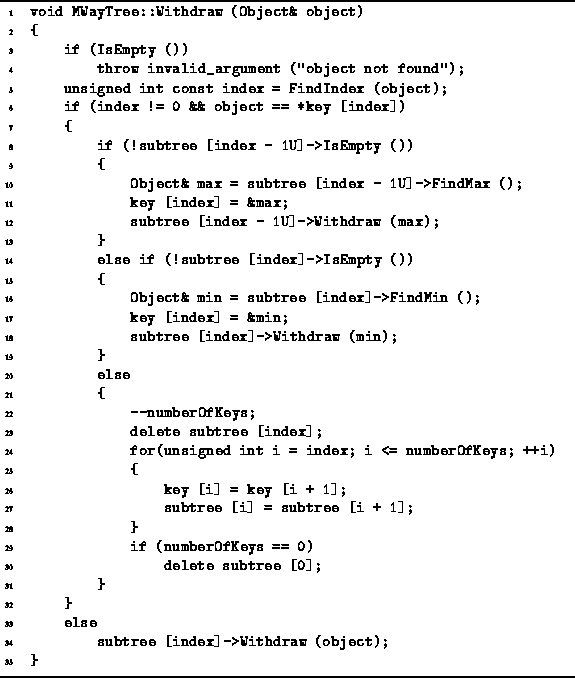

Data Structures and Algorithms
with Object-Oriented Design Patterns in C++
Data Structures and Algorithms
with Object-Oriented Design Patterns in C++
The procedure for removing items from an M-way search tree
follows directly from the algorithm for removing items from
a binary search tree given in Section  .
The basic idea is that the item to be deleted is pushed down the tree
from its initial position to a node from which it can be easily deleted.
Clearly, items are easily deleted from leaf nodes.
In addition, consider an internal node of an M-way search tree of the form
.
The basic idea is that the item to be deleted is pushed down the tree
from its initial position to a node from which it can be easily deleted.
Clearly, items are easily deleted from leaf nodes.
In addition, consider an internal node of an M-way search tree of the form

If both  and
and  are empty trees,
then the key
are empty trees,
then the key  can be deleted from T
by removing both
can be deleted from T
by removing both  and
and  , say.
If
, say.
If  is non-empty,
is non-empty,  can be pushed down the tree by
swapping it with the largest key in
can be pushed down the tree by
swapping it with the largest key in  ;
and if
;
and if  is non-empty,
is non-empty,  can be pushed down the tree by
swapping it with the smallest key in
can be pushed down the tree by
swapping it with the smallest key in  .
.
Program gives the code for the Withdraw
function of the MWayTree class.
The general form of the algorithm follows that of the Withdraw
routine for the BST class (Program ).

Program: MWayTree Class Withdraw Member Function Definition
 Copyright © 1997 by Bruno R. Preiss, P.Eng. All rights reserved.
Copyright © 1997 by Bruno R. Preiss, P.Eng. All rights reserved.